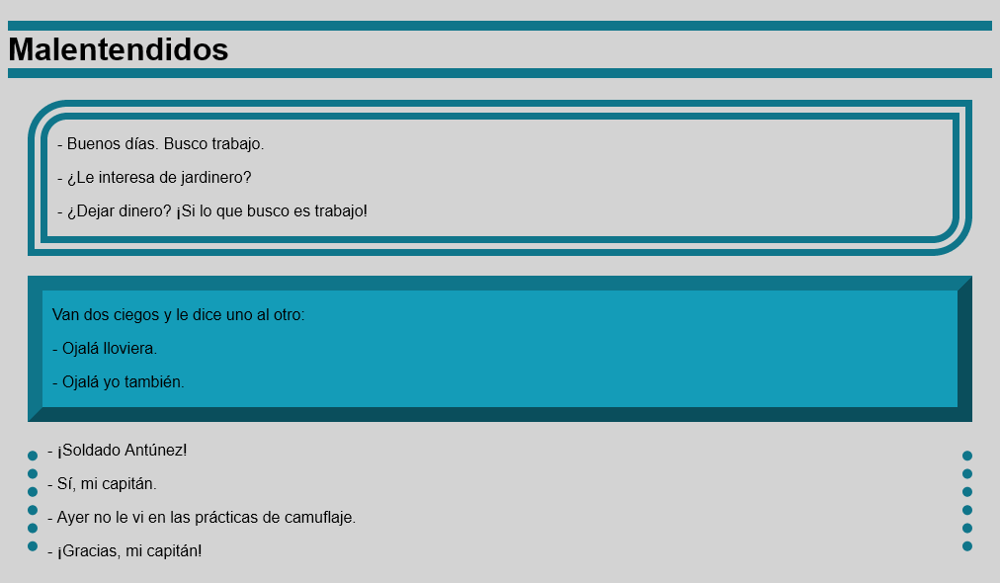

Estos ejercicios tratan sobre los temas tratados en la Semana 4 del curso.
Para facilitar la realización de los ejercicios, se proporcionan unas plantillas de los ejercicios S4. Una vez descargado el fichero zip:
Descomprima las plantillas en la carpeta ejercicios. Se creará una carpeta s4-plantillas.
Renombre la carpeta s4-plantillas como s4.
Las capturas de pantalla están tomadas con un ancho de ventana de 1024px aproximadamente.
⚠️ En algunos aspectos, no es necesario que el resultado sea absolutamente exacto, sobre todo porque algunos detalles no tienen importancia. Por ejemplo, basta con que la ventana del navegador sea un poco más ancha o estrecha para que las palabras salten de una línea a la siguiente. Los valores de tamaños y distancias utilizados suelen ser valores "redondos", pero acertar el valor exacto puede necesitar varios intentos. Con que el parecido sea razonable, es suficiente. Otros aspectos sí que me gustaría que fueran idénticos, por ejemplo los tipos de letra, la posición de las imágenes o qué palabras se han resaltado.
Formatee con Visual Studio Code tanto la página web como la hoja de estilo (con CSScomb).
S4 1 A - Fuentes web locales
Abra en Visual Studio Code la página web-fonts.html.
Añada las etiquetas necesarias a partir de la captura siguiente:
Vista sin estilo:
Ayuda (haga clic aquí si no se le ocurre cómo hacerlo)
En la vista sin estilo, se identifican dos párrafos p.
Cree la hoja de estilo web-fonts.css y añada el enlace a la hoja de estilo.
Añada las reglas en la hoja de estilo de manera que al abrir la página web en un navegador el contenido se vea como en la captura con estilo siguiente.
Vista con estilo:
Ayuda (haga clic aquí si no se le ocurre cómo hacerlo)
Escriba reglas-arroba @font-face para cada fuente. Los nombres de las fuentes son Sedgwick Ave y Lobster.
Asigne clases a los dos párrafos.
Ajuste el color de fondo de la página en cualquiera de las etiquetas globales html o body.
Ajuste el tipo de letra, el color, el tamaño y la alineación de las dos clases de párrafos. Al asignar el tipo de letra, recuerde añadir un segundo valor con una fuente genérica (teniendo en cuenta que ambas son fuentes que imitan la escritura manual).
Copie los ficheros web-fonts.html y web-fonts.css del ejercicio 1 A en la carpeta del ejercicio 1 B (pero no los ficheros de las fuentes WOFF2.
Abra en Visual Studio Code la hoja de estilo web-fonts.css.
Modifique la hoja de estilo haciendo que las fuentes Sedgwick Ave y Lobster se descarguen de Google Fonts, de manera que al abrir la página web en un navegador el contenido se vea como en el ejercicio anterior.
Ayuda (haga clic aquí si no se le ocurre cómo hacerlo)
Susituya las reglas @font-face por las reglas @import que muestra Google Fotns al seleccionar cada fuente.
Añada las etiquetas necesarias a partir de las capturas siguientes:
Vista sin estilo:
Vista con estilo:

Ayuda (haga clic aquí si no se le ocurre cómo hacerlo)
En la vista sin estilo, se identifican un título h1 y varios párrafos p.
En la vista con estilo, se identifican tres etiquetas que agrupan los párrafos que forman cada chiste. La etiqueta puede ser div, aunque también podría haber sido article o section
Cree la hoja de estilo bordes.css y añada el enlace a la hoja de estilo.
Añada las reglas en la hoja de estilo de manera que al abrir la página web en un navegador el contenido se vea como en la captura con estilo anterior.
Ayuda (haga clic aquí si no se le ocurre cómo hacerlo)
Asigne clases a las tres divisiones.
Asigne los diferentes bordes a cada clase y al título.
Para que el contenido de las divisiones se separe de los bordes y que las divisones se separen entre sí, añada la sentencia siguiente:
div {
margin: 20px;
padding: 0 10px;
}
Nota: Colores empleados:
hsl(190 80% 30%) en todos los bordes,
hsl(190 80% 40%) y
lightgrey para los fondos.
S4 3 - Márgenes
En este ejercicio se trata de hacer tres diseños distintos de la misma página.
La hoja de estilo de la plantilla ya incluye los colores y bordes que ayudarán a distinguir dónde usar las propiedades margin y margin.
La página de partida muestra el siguiente aspecto:
La parte inferior de la página posterior a los párrafos (de color rosado) puede ser más o menos larga dependiendo del tamaño de la ventana.
Recuerde que la hoja de estilo predeterminada de los navegadores asigna margin a algunos elementos. A veces es necesario eliminar ese margen exterior añadiendo la regla margin: 0;
Normalmente, cada ejercicio se puede realizar de varias maneras. Cualquiera de ellas es válida. Lo más importante es intentar no escribir propiedades innecesarias para no complicar la hoja de estilo (por ejemplo, dar padding: 0 a un párrafo p en estos ejercicios sería innecesario, porque los párrafos no tienen padding predeterminado. Una manera de utilizar menos propiedades es utilizar la propiedad compuesta margin en vez de las propiedades individuales margin-top, margin-right, margin-bottom y margin-bottom (lo mismo con padding), pero se puede hacer de cualquiera de las dos formas.
S4 3 A - Márgenes A
Añada propiedades margin y/o padding en la hoja de estilo de manera que al abrir la página web en un navegador el contenido se vea como en la captura siguiente.
Ayuda (haga clic aquí si no se le ocurre cómo hacerlo)
Se puede conseguir el resultado utilizando únicamente dos propiedades margin que eliminen márgenes exteriores predeterminados.
S4 3 B - Márgenes B
Añada propiedades margin y/o padding en la hoja de estilo de manera que al abrir la página web en un navegador el contenido se vea como en la captura siguiente.
Los valores numéricos utilizados pueden ser 0 y 50px.
Ayuda (haga clic aquí si no se le ocurre cómo hacerlo)
Se puede conseguir el resultado utilizando únicamente cuatro propiedades margin y/o padding.
S4 3 C - Márgenes C
Añada propiedades margin y/o padding en la hoja de estilo de manera que al abrir la página web en un navegador el contenido se vea como en la captura siguiente.
Los valores numéricos utilizados pueden ser 0 y 25px.
Ayuda (haga clic aquí si no se le ocurre cómo hacerlo)
Se puede conseguir el resultado utilizando únicamente seis propiedades margin y/o padding.